张子墨
Sunmiss · 2004 · 游戏设计师
系统策划
外向、好沟通，逻辑清楚，情绪不容易上头
3 个独立项目 · 每个都做到能玩 · 都留了 GDD 和复盘
数值平衡· 系统构筑· 关卡节奏· 原型验证
Sunmiss · 2004 · 游戏设计师
系统策划
外向、好沟通，逻辑清楚，情绪不容易上头
3 个独立项目 · 每个都做到能玩 · 都留了 GDD 和复盘
数值平衡· 系统构筑· 关卡节奏· 原型验证
《重返安博莱》是一款军事题材的竖屏俯视角对战手游，底子接近《皇室战争》：军令当资源，拖拽部署兵种，推掉对面大本营就赢。出战带 8 个兵种 + 1 个将军，32 个兵种子类型和 5 个学派、21 个将军撑起流派空间。实习期间这块设计文档基本是我一个人从零搭起来的——从世界观到 UI 交互规范，核心战斗、局外系统、游戏模式、商业化的文档都归我。
原来是 6 篇平铺的大文档，翻起来处处重复、口径还对不上。我把它拆成 5 个功能域、约 20 篇专项文档，再加上术语表、交叉引用和按角色分的阅读路径——策划、程序、美术各走各的路，都能直接找到自己要的那一段。
5 大类、32 个兵种子类型，加 21 个具体兵种的完整数据（HP、军令消耗、部署位置、伤害矩阵、攻击速度、特殊能力）。将军系统是 4 品质 × 5 学派，带被动 Buff、主动技能和升星养成，直接改大本营属性和出战策略。
三资源经济（金币 / 钻石 / 体力）、养成与部队管理（军营、兵种、将军、卡组编成）、商城与商业化（招募、礼包、碎片商店）、社交与军团（军团、好友、聊天、捐赠），以及 0→60 级的功能解锁节点地图。
画了 27 张 UI 界面示意图，主界面、战斗面板、部队面板、商城、军团、基地、天梯全都在里面。另外写了 5 篇模块实现文档，把各面板的交互规格、状态变化和视觉规范落到细节，程序拿到就能开工。
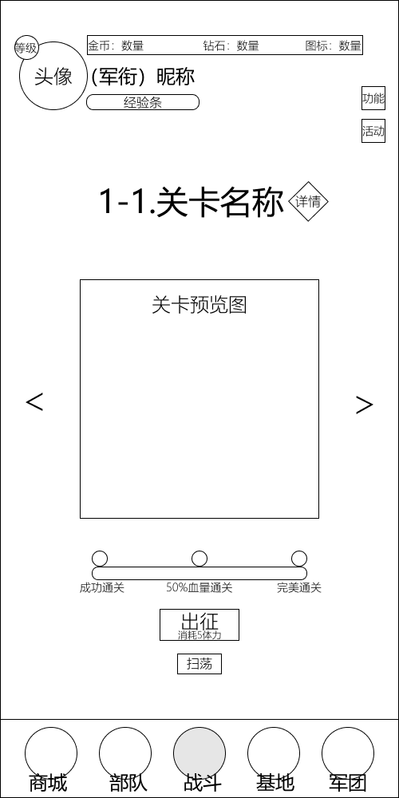
战斗面板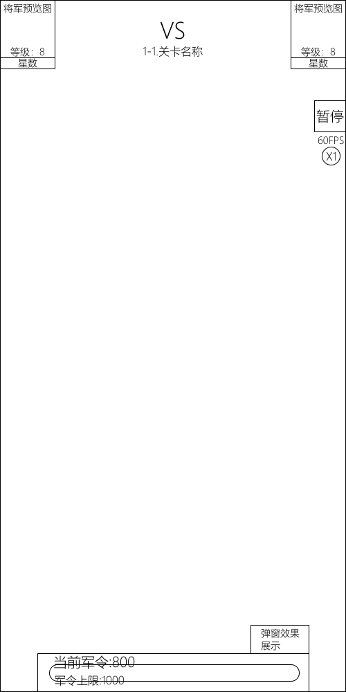
局内战斗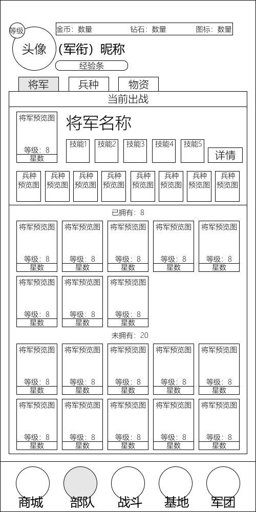
部队面板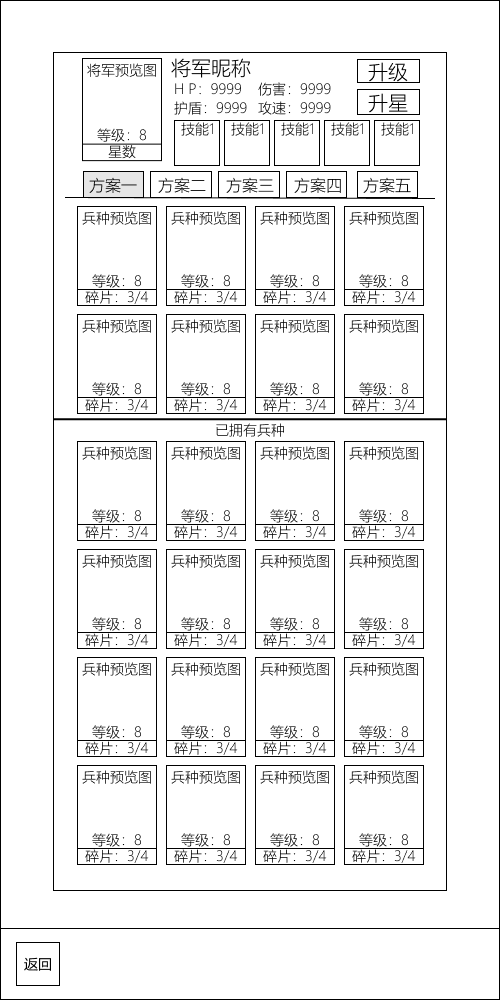
将军详情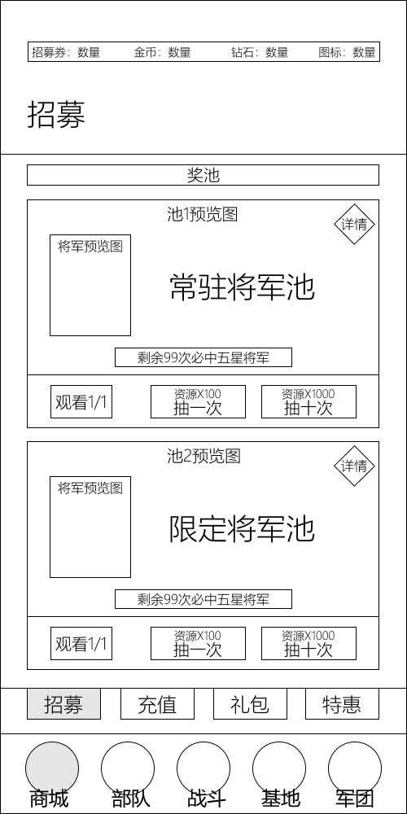
商城面板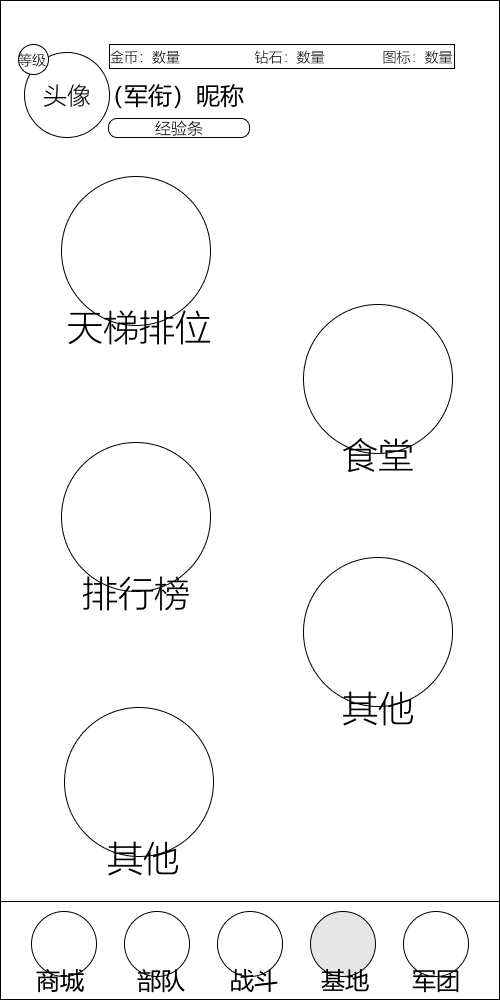
基地面板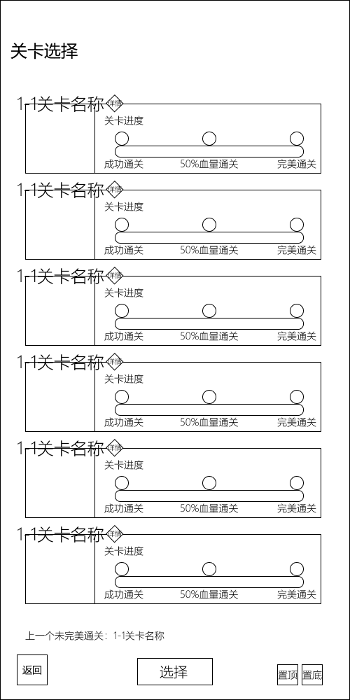
关卡列表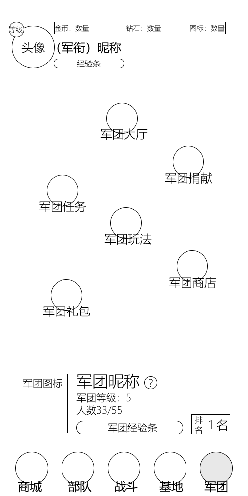
军团面板四套注册表、事件驱动解耦、数据与逻辑分离——超时空激战 33 个模块互不耦合
二次函数等级曲线、加权稀有度分配、伤害公式反推——猎魂传奇 9 维属性 × 5 品质
三段式难度曲线、Boss 机制铺排、无尽模式动态难度——烈火英雄 5 类怪 + 3 个 Boss
每个项目都先做出能玩的 MVP，拿实测反馈改，而不是只写在文档里
亲密度阶梯、情绪影响对话走向——AnimeChatWeb 四层情感系统
4 架战机 · 13 种词条 · 7 关战役 — 竖版 Roguelike 飞机大战
一款竖版 Roguelike 飞机大战，想做清楚的只有一件事：怎么让玩家在 30 分钟的短局里，走完从"小心翼翼"到"火力全开"的 Build 成长曲线？
拆成三层来解。词条层，13 种词条分 4 级稀有度，三选一、可叠加，每局的构筑路线都不一样。节奏层，超频系统做"击杀蓄能 → 3 秒无敌爆发"的循环，把情绪的起伏钉在时间轴上。关卡层，7 关战役星图从单一敌人一路加到三 Boss 连战，机制边教边加难度。
纯 JS + Canvas，没有外部依赖，打开浏览器就能玩。
13 种词条分 4 级稀有度（普通 5 / 稀有 3 / 史诗 1 / 传说 0.65），击杀后从 3 张卡牌里选 1 张。词条能叠——射速最多叠 3 层；部分词条之间还有配合，穿透叠满会解锁闪电连锁，僚机词条彼此增幅。每局词条出现的顺序不一样，玩家得在"眼下哪张最强"和"给后面的词条铺路"之间选一个。
两种模式各有各的活。无尽模式是刷分挑战，难度跟着分数往上爬（每 500 分敌人更强、刷得更快）。战役模式是完整体验，7 关按 S 形星图排开，从教学关的单一敌人，一路加到最终关三 Boss 连战加全敌人混战。4 架战机（直射 / 散射 / 轰炸 / 激光）让同一关有完全不同的打法。
视觉上只有一套语言：青色主色贯穿 UI 和弹幕，发光边框加角括号强化科技感，CRT 噪点滤镜和屏幕震动负责打击感。粒子系统开了 6 条通道（烟雾 / 碎片 / 核心 / 闪光 / 火花 / 光环），Boss 出场和被击杀各有独立的屏幕特效。
800 粒子上限、多 Boss 弹幕一起压过来的时候，操作不能有黏滞感。玩家碰撞箱做成了三角形而不是矩形，贴着战机外形走，擦弹的判定才算公道。
ENEMY / BOSS / BUFF / CRAFT 四套注册表，接口统一、声明式扩展。加敌人、加词条、加战机，核心循环一行都不用动。
击杀攒能量，攒满自动触发：射速翻倍 + 无敌，持续 3 秒。这套东西是全局节奏的开关——什么时候打、敢不敢压上去，都看它。
S 形蛇行排列的节点地图，从新兵试炼一直打到三 Boss 决战。进度用 localStorage 存着，关掉浏览器也不丢。
宝石分三档（5 / 10 / 20 分），掉落走爆发、下落、磁吸三段物理。再配上增值、磁力、贪婪几个词条，捡钱这件事本身就有了策略层。
| 单位 | 血量 | 分值 | 特性 |
|---|---|---|---|
| 基础机 | 1 | 5 | 直线下落 |
| 射手 | 2 | 10 | 悬停射击 |
| 突击 | 2 | 20 | 悬停冲刺 |
| 旋刃 | 3 | 30 | 扇形弹幕 |
| 幻影 | 3 | 40 | 瞄准射击+瞬移 |
| 独眼王 | 200 | — | 扫射/护盾/召唤 |
| 夜煞 | 240 | — | 激光/反弹护盾 |
| 冰邪王 | 200 | — | 冰锥/冰墙/漩涡 |
| 巨灵神 | 250 | — | 天降神雨/横扫/天罚 |
找了 7 个有 Roguelike 经验的玩家试玩，试完统计：射速（5/7 人首选）、僚机（4/7）、穿透（4/7）三条线最受欢迎，超频相关词条只有 2/7 会选。问了才知道，问题出在反馈：击杀蓄能的进度条不够直观，玩家判断不了"还差多少进超频"。后来补了击杀粒子的汇聚动画，选取率明显上来了。这次测试也说明一件事：不是数值不够强，是反馈不够清楚。
把判定框从矩形改成三角形之后，擦弹的手感好了不少，有玩家直接说"感觉更公平了"。这个做法放到别的弹幕游戏里也能用。
美术素材是 AI 生成的，风格不太统一；33 个脚本全靠全局变量串着，该上模块打包了；无尽模式后期没有新机制往里加，打久了会腻。
想要什么：4 架战机把弹幕射击的基础攻击模式铺满，让不同手感的玩家都能找到自己想玩的那一架。
| 战机 | 定位 | 风险/收益 | 目标玩家 |
|---|---|---|---|
| 紫色弹幕 | 通用型，无短板 | 低风险/稳定输出 | 新手、稳健型 |
| 苍穹 | 近战爆发，散射覆盖 | 高风险/高回报（射程 320px 限制） | 有操作的玩家 |
| 墨子号 | AOE 范围伤害，鼠标瞄准 | 中风险/高覆盖（唯一鼠标操作） | 喜欢 FPS 手感的玩家 |
| 赤虹 | 实时激光，穿透 + 无弹道延迟 | 中风险/持续输出 | 追求即时反馈的玩家 |
赤虹是最后做的，也是唯一绕过子弹系统的一个：它不是"发射子弹"，而是持续输出 DPS。所以穿透词条落在它身上不是"多穿一个敌人"，而是"每层加宽 6px"。词条系统当时早就定稿了，我是先把每个词条跟激光怎么交互想清楚，才动手做这架战机。
散射为什么要卡 320px：照散弹枪"近距离高爆发"的思路加了射程上限。不卡的话它远距离照样能打，高风险高回报的定位就没了。底层没有伤害衰减这回事，所以用"子弹到射程就消失"代替。
起点很低：最开始就几个弹幕射击里常见的词条（射速叠加、加子弹数量之类），后面靠一轮轮测试往里加。
怎么长的：
砍掉的两个：寒冰弹，减速把射击节奏拖住了；爆炸弹，跟墨子号定位重叠，强度也超标。
问题：怎么让玩家往前冲，而不是缩在屏幕底下？
试过三种充能方式：
会导致玩家"等"而不是"打"
在生存系统中难以立足，鼓励挨打不合理
必须不断击杀才能积累能量，迫使玩家保持进攻节奏
超频 = 无敌 + 双倍射速：两样绑在一起卖。只给无敌，玩家照样保守；只给加速，玩家未必敢冲。合起来才是完整的爽感——既有输出效率，又不用怕"没环境输出"。
思路：不搞线性加难度，每个 Boss 各有侧重，顺便把一项机制教给玩家。
| Boss | 核心机制 | 教会玩家什么 |
|---|---|---|
| 独眼王 | 扫射 + 护盾 + 召唤 | 应对固定弹幕、学会利用 Boss 间隙输出、处理多目标 |
| 夜煞 | 追踪 + 扫射 + 弹幕墙 | 应对追踪弹幕的躲避策略、识别弹幕空隙 |
| 冰邪王 | 扫射 + 冰墙 + 冰霜弹 | 防御机制可以是攻击性的（冰墙阻挡 + 反伤）、环境弹幕应对 |
循环怎么加强：无尽模式里 Boss 血量按 (1 + round × 0.5) 倍增长，出场间隔从 500 分慢慢拉到 2000 分。这组数没做 Excel 模拟，全靠反复试——打到两千分左右，词条搭得不行的局就开始吃力了。
等级公式：Threshold(l) = 25l² + 75l + 50
| 等级 | 所需经验 | 特点 |
|---|---|---|
| 0→1 | 50 | 前期快速升级，快速获得第一个词条 |
| 1→2 | 150 | 仍然较快 |
| 2→3 | 300 | 开始放缓 |
| 3→4 | 500 | 与难度增长匹配 |
| 4→5 | 750 | 后期需要更多击杀 |
| 5→6 | 1050 | 与无尽模式难度深度匹配 |
为什么用二次函数：线性太平，指数太陡。二次曲线能做到"前期升得快、后期慢下来"，前几级马上拿到词条，手感不会空；后面又刚好跟得上无尽模式的难度增长。
出处：泰拉瑞亚的套装效果，长时间不受伤可以抵挡下一次伤害。
玩家对它的态度是分阶段的：
如果重做一遍：
最该记住的一条：别图快。事前把数值模拟和系统演练做掉，比上线之后再回头调便宜得多。
AI 动漫角色聊天 · Galgame 式的互动体验
一个 Galgame 式的 AI 角色互动游戏，最难的坎在开头那句：对话是 AI 现场生成的，不是策划写好的，怎么保证角色不出戏，又让关系成长真的能被感觉到？
靠四层系统一起兜：亲密度（-100 到 +100，10 个阶段，正向最多 +1、负向最多 -2，"破坏容易、建设难"）、情绪（4 维情绪 × 亲密度系数，同一句话在不同情绪下效果不一样）、向量记忆（让角色记得住之前聊过的关键内容）、三套模式（陌生人 / 成长 / 陪伴者，接住不同玩家的需求）。
做完这个项目我对一件事印象很深：约束比自由度更重要。Prompt 写得越细，角色越稳，但也越木。最后是精简的核心人格 + 动态注入的行为指引更好用。这跟游戏设计里"规则 vs 自由度"其实是同一个题。
轮播选角色 + 全屏动态天空背景（11 层叠加：天空渐变、星星、云海、神光、微尘、樱花、暗角）。每个角色有自己的主题色、立绘和语录，先把氛围铺起来。
DeepSeek 流式输出，逐字符打字机效果——标点还做了区分延迟：逗号 120ms，句号 240ms，普通字 40ms。三套独立对话模式（陌生 / 成长 / 陪伴），角色的情绪跟着模式走。
亲密度（-100 到 +100，10 个阶段）+ 情绪系统（4 种情绪各带系数，直接影响亲密度涨落）。AI 通过结构化标签实时回报情感状态，关系的变化玩家看得出来。
LanceDB 本地向量库 + DashScope Embedding 做记忆检索；MiniMax 按当前亲密度阶段现场生成剧情场景，从冷淡试探到亲密互动，上下文一直能接上。
DeepSeek SSE 流式透传，行级缓冲拦截标签，实时解析亲密度和情绪；TCP 分片把 JSON 切断了也不会解析失败。
10 级关系阶段（敌视 → 依恋），情绪系数决定亲密度一次涨落多少；负面情绪压到低强度会强制掉关系。
LanceDB 本地向量库 + DashScope 1024 维 Embedding，由 DeepSeek Function Calling 判断何时该检索记忆，对话因此有长期记忆。
MiniMax 按当前亲密度阶段生成 3 个剧情场景，服务端会校验防篡改，用户也能自己写场景描述。
| Provider | 用途 | 模式 |
|---|---|---|
| DeepSeek API | 对话生成 | SSE 流式 |
| MiniMax API | 剧情场景生成 | 非流式 |
| DashScope API | 向量 Embedding | 1024 维 |
| 情绪 | 亲密度系数 | 触发示例 |
|---|---|---|
| positive（开心） | ×1.3 | "谢谢"、"喜欢" |
| excited（兴奋） | ×1.4 | "太棒了"、"厉害" |
| calm（平静） | ×1.0 | 默认状态 |
| negative（难过） | ×0.5 | "滚"、"讨厌" |
把 Unity 里的 C# 类逐个对应到 React 组件 / JS 模块（ChatManager.cs → useChatManager.js 这类），一个不落地搬完，跨技术栈迁移这条路是走得通的。
没走传统 RAG 那套流程，改用 DeepSeek Function Calling：服务端先判断这轮要不要调 search_memory，再发流式请求。记忆系统的结构一下简单了很多。
对话历史只存在内存里，一刷新就没了，得做持久化；65 张角色图全部本地加载，该上 CDN 和懒加载，先把首屏拉起来。
内置 /admin 页面：名称、立绘、语录、标签都能可视化改，图片直接上传，不用再去动 JSON 文件。
调试面板：API 日志、亲密度变量、对话历史、记忆条目、场景生成记录都能实时看。调 bug 的时间省下来不少。
当时的判断：核心交互是"文字"，那就用一个为文字而生的技术栈，而不是为"游戏"而生的引擎。
这个项目玩的就是跟角色聊天。Unity 强在物理、3D 渲染、复杂状态机，这里一样用不上；反过来，UI 布局、文本渲染、网络请求，在 Web 这边都是现成的，进引擎反而要自己适配一遍。为了用不上的能力去背引擎的复杂度，不划算。
换成 Web（Next.js + React）之后，毛玻璃、渐变天空、樱花粒子、打字机效果这类视觉语言做得很快，CSS 改 UI 的速度也远快于在引擎里调界面。
想要什么：每件事都交给最合适、最划算的那个模型，而不是找个万能模型全包。
| 任务 | 模型 | 选择理由 |
|---|---|---|
| 角色对话 | DeepSeek | 中文理解和推理能力强，能准确把握角色人格和情感细微差别 |
| 场景生成 | MiniMax-M2.7 | 响应速度快、成本低，避免在场景选择阶段流失用户耐心 |
| 向量嵌入 | DashScope v4 | 免费额度充足，1024 维向量支持中文语义检索 |
代价：系统复杂度上去了，三套 API 调用、三套错误处理、三套超时策略都得写。但摊到每件事上性价比更高——场景生成换成 DeepSeek 成本会明显上涨；对话换成 MiniMax，人格一致性和情感表达都要打折扣。
想要什么：让"关系在长"这件事本身成为奖励，从疏远到熟悉再到依恋，每一步都有分量。
初始 -20：高冷傲娇的爱弥丝一上来是 -20，得玩家主动去破冰，不会白给好感。
单次波动 [-2, +1]：正向最多 +1，负向最多 -2。现实里信任就是这样攒的——建立慢，砸掉快。想靠一两句甜言蜜语拉满，不可能。
情绪介入：四维情绪（positive / negative / excited / calm）用系数改亲密度涨落——开心时正面互动 ×1.3，难过时 ×0.5，兴奋时 ×1.4，情绪崩了直接扣 2 点。同样一句话在不同情绪下效果不同，角色也就不是"说好话就涨"的木桩了。
防刷屏：连着发 3 条以上相似内容触发衰减，系数掉到 0.3，重复话术刷不动好感。
问题：每轮对话后自动提取记忆看着更聪明，但成本和记忆质量都兜不住。
为什么改成手动触发：自动提取一定会把闲聊和寒暄也录进去，这些垃圾记忆被检索出来喂给模型，角色就开始胡说。手动触发（一个"保存记忆"按钮）把决定权交给用户，记忆库的信噪比才守得住。
RAG 怎么走：对话历史 → DeepSeek 提取事实 → DashScope 向量嵌入 → LanceDB 存储。AI 判断这轮提到了过去的事，就用 Function Calling 触发一次检索，把最相关的 3-5 条注入上下文，角色才能记得住用户之前说过什么。
想要什么：让对话有场景托着，同时别把不想用的人拦在门外。
场景怎么来：进聊天前 AI 生成 3 个场景备选，每个带一段旁白和角色的开场白。风格跟着亲密度走——低亲密度是偶遇和陌生环境，中段是日常和试探性互动，高亲密度才进亲密和暧昧的氛围。
为什么要先问一句：选场景的弹窗会先问"是否为你编织一段专属的相遇？"再展示卡片。这一步是留给不想从场景开始的人的——有人只想直接开聊，强行生成场景既费时间又把上下文搅浑。有这一步，"快速聊天"和"沉浸式场景"两种需求才不打架。
想要什么：用视觉把"恋爱 / 言情"的调性立住。
毛玻璃：大量用 backdrop-filter: blur(12px) 加半透明白底。模糊的光感自带柔和梦幻，而且面板不会把背景挡死——角色的主题场景一直若隐若现，像隔着一层窗在看。
BackgroundEngine 三层景深：
| 层级 | 特征 | 设计意图 |
|---|---|---|
| 远景 | scale 小、有模糊、下落慢 | 营造空间纵深度 |
| 中景 | scale 中等、无模糊、下落中速 | 主视觉层，最常见的樱花形态 |
| 前景 | scale 大、有模糊、下落快 | 增强沉浸感，模拟"樱花从眼前飘过" |
没上 Canvas / WebGL：60 片樱花这个量级，DOM + CSS 动画性能完全够，开发成本还低得多。这种地方"够用又好看"比"技术上更先进"重要。
想要什么：不同玩家想要的东西不一样，入口就不该只有一个。
| 模式 | 定位 | 亲密度 | 情绪 | 用户场景 |
|---|---|---|---|---|
| 陌生人 | 初次相遇 | 不追踪 | 不启用 | 体验角色的第一印象，感受"被冷淡对待"的真实感 |
| 成长 | 关系培养 | 全程追踪 | 完整启用 | 主线体验，从疏远到依恋的完整关系成长 |
| 陪伴者 | 深度羁绊 | 不追踪 | 不启用 | 不想付出培养成本，快速寻找情感慰藉 |
为什么要做陪伴者模式：不是每个人都有耐心从 -20 慢慢养。有时候人只是想找个"已经很亲的人"说说话。陪伴者模式跳过培养过程直接给亲密关系——这不是偷懒，是把另一种情感需求也接住。
最大的风险：角色"出戏"——突然跳出设定，说出一句根本不像她会说的话。
怎么防：
现在的问题：角色提示词堆得太多，某些场景下行为就显得刻板。写得细确实更稳，但 AI 的自然表达也被压住了。"一致性"和"自然度"这笔账还在找平衡点。后面想试的方向是：只留精简的核心人格 Prompt，把亲密度相关的行为指引动态注入，替掉现在这一整块。
 角色选择界面
角色选择界面
 动态剧情生成
动态剧情生成
 聊天界面 · 明星日鞠
聊天界面 · 明星日鞠
 聊天界面 · 早濑优香
聊天界面 · 早濑优香
 终端日志输出
终端日志输出
节点探索 · 搜打撤 · 装备构筑 — 2D Roguelike 搜刮撤离
Unity 2D Roguelike，把《杀戮尖塔》的节点地图和《逃离塔科夫》"死了就全没"的规则拼在一起——进图搜装备、打怪拿掉落，走到撤离点才算真正到手。想验证的就一个问题：搜打撤的紧张感，能不能装进 2D 节点制的节奏里？
搜打撤（Search-Fight-Extract）主循环：进图 → 节点探索收集装备 → 走到撤离点才算保住战利品。死一次，本次没撤出的东西全没，每一步都得掂量风险。
整套物品系统挂在 ScriptableObject 上：9 种属性维度（生命 / 魂力 / 攻击 / 防御 / 速度 / 暴击 / 吸血等）、5 个品质（白 / 黄 / 紫 / 黑 / 红）、6 类物品（武魂 / 魂环 / 魂骨 / 草药 / 消耗品 / 垃圾），装备词条随机生成，撑得起 Build 构筑。
每局随机生成 10-18 层节点地图，战斗 / 容器 / 事件 / 休息 / 撤离五种节点按权重分布，6 个区域 × 4 档难度，一局一个样子。
数据层（ScriptableObject 模板）→ 运行时层（ItemInstance / PlayerState）→ 逻辑层（各 Manager）→ 节点解析层（Resolver）→ UI 层。每层只管自己的事，层间靠事件解耦。
MapGenerator 按 MapGenConfig 里的权重随机铺出分层节点，每层 2-3 个；UIGameMap 用 ScrollView 把节点图渲染出来。
BattleResolver 按攻防血公式逐回合算伤害，赢了走 LootTable 加权随机发战利品，输了就强制撤离或直接判定死亡。
LootTable 定下每种敌人的掉落概率（Chance%）和数量范围（Min/Max），ItemGenerator 用工厂方法造出带随机词条的 ItemInstance，品质越高权重越低。
EventResolver 提供 5 种随机遭遇（远古魂骨气息 / 毒雾陷阱 / 疗愈仙草 / 魂兽领域 / 先祖笔记），直接动生命值和资源，让探索没那么可预测。
| 属性 | 类型 | 说明 |
|---|---|---|
| MaxHP | 基础 | 最大生命值 |
| MaxSoulPower | 基础 | 最大魂力值 |
| Attack | 攻击 | 基础攻击力 |
| AttackCoefficient | 攻击 | 攻击系数加成 |
| Defense | 防御 | 基础防御力 |
| Speed | 速度 | 行动速度 |
| DamageReduction | 防御 | 伤害减免 |
| CritChance | 攻击 | 暴击概率 |
| LifeSteal | 生存 | 生命偷取 |
| 节点 | 功能 | 风险 |
|---|---|---|
| 战斗节点 | 击败敌人获取掉落 | 高 |
| 容器节点 | 搜索宝箱获取物品 | 低 |
| 事件节点 | 随机遭遇影响 HP | 中 |
| 休息节点 | 恢复生命值 | 无 |
| 撤离节点 | 安全撤离保留战利品 | 无 |
物品、敌人、地图配置全用 ScriptableObject 定义，策划在 Inspector 里改数值就行，不用碰代码。数据和逻辑算是彻底分开了。
DataManager / PlayerManager / InventoryManager / RaidManager 各管一块，靠事件（OnStatsUpdated）跟 UI 解耦，加新系统不用动核心流程。
战斗现在是自动结算的，可以换成可交互的回合制；节点之间缺路径连线；存档没加密，能改；还差一套金币经济和商店。
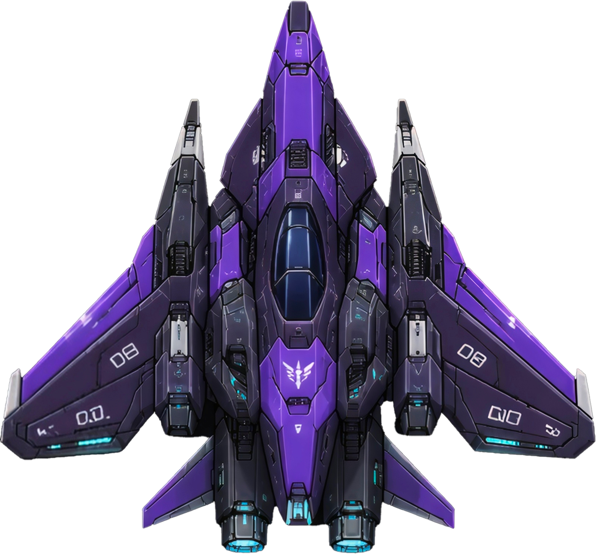
紫色更有韵味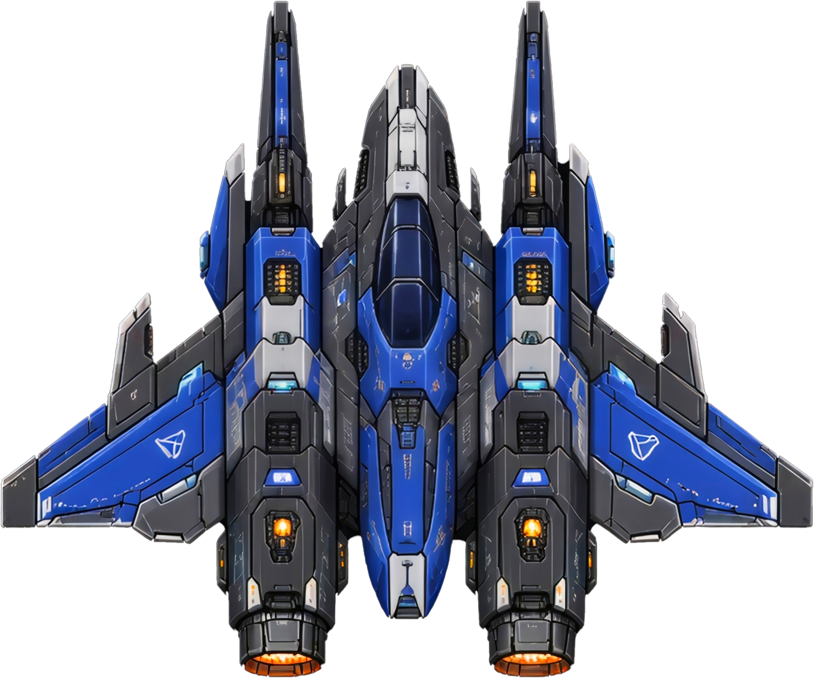
墨子号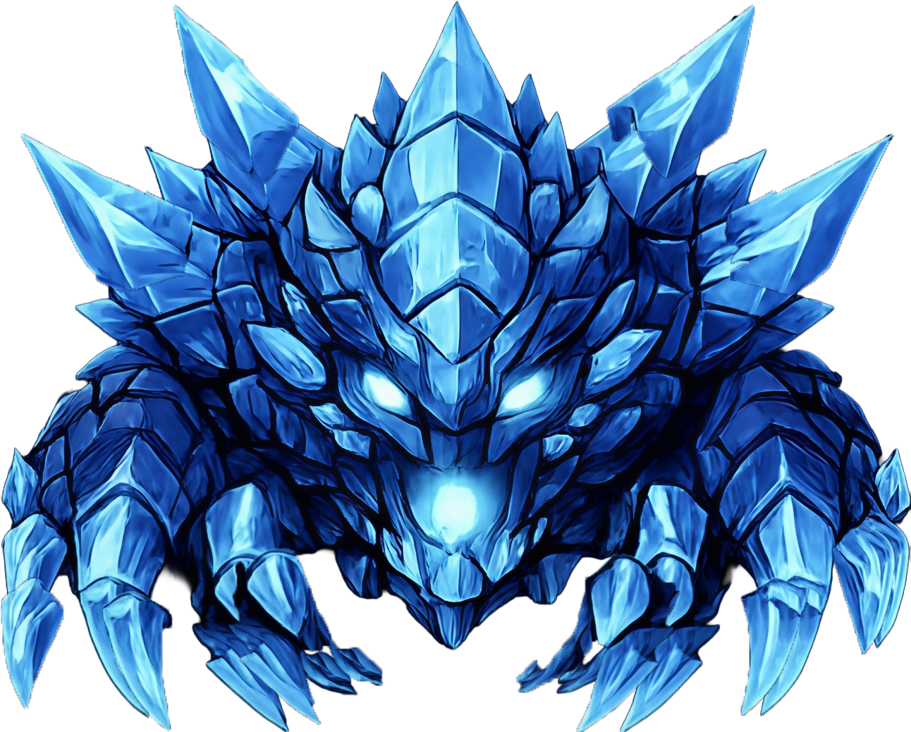
冰邪王·动作帧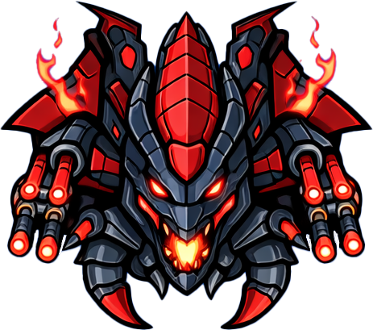
旋刃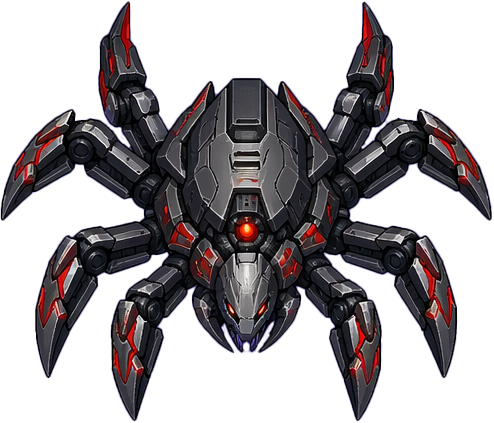
幻影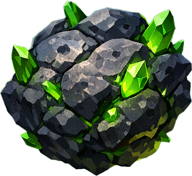
陨石 5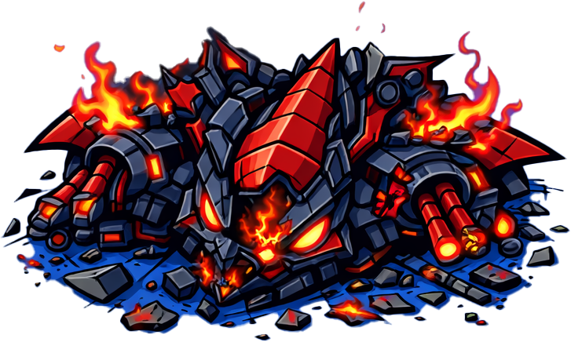
破损战舰 4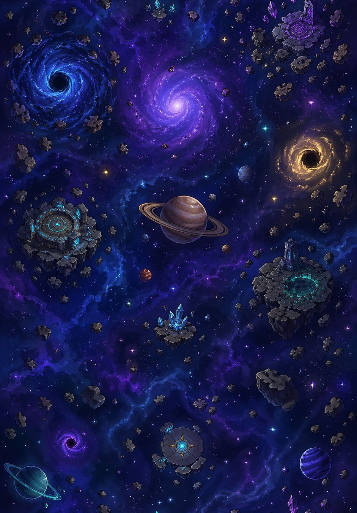
星空背景深度拆解、市场案例与设计思考
搜打撤模式的系统拆解——从玩家体验到经济架构，含市场数据、核心机制、关卡设计思路和竞品对比
2025 年是射击游戏市场的分水岭：单一玩法吃不开了，复合体验开始接管。腾讯射击品类只占 7% 的产品数量，却贡献了前 100 移动游戏 18.29% 的收入。《三角洲行动》从「新品爆款」进了「长青游戏」的名单，其中的搜打撤模式以 3000 万 DAU 成为 FPS 里增长最快的子品类。
1000小时下来枪法不差，但预判对方动线、卡好伏击位、在对的时间点出现在对的地方——这种感觉是正面强拼给不了的。
侦察干员、脚步声、枪声方向——信息本身就是武器。知道对方在哪而对方不知道我在哪，这种不对等很上瘾。
老鼠队装备往往不是最好的，靠策略把装备比自己强的队伍打穿，每局都可能发生。搜打撤的劲儿就在这。
如果物资获取太容易 → 玩家很快“毕业”，失去游玩动力；如果物资获取太难 → 玩家频繁“破产”，挫败感过强。三角洲的做法：不同难度地图形成“梯度经济”，普通地图保本，机密/绝密地图高风险高回报。
| 地图难度 | 带入成本 | 平均收益 | 单局期望收益 |
|---|---|---|---|
| 普通 | 0-50w | 50w | 稳定盈利 |
| 机密 | 10w-300w | 200w | 50w（撤离率40%） |
| 绝密 | 55w-300w | 500w | 80w（撤离率30%） |
保险箱里的东西撤离失败也不会掉。有这一层垫底，玩家才敢带值钱的装备进图，新手的挫败感也压住了。于是就有了"保险箱经济学"——好东西优先往保险箱塞。
策划在开服时承诺“仓库永久保存”，导致通货膨胀只能变相砍收益，每次调整都引发玩家不满。
我的方案：引入“赛季远征”机制（参考 ARC Raiders）——玩家达到一定等级后可选择重置进度，换取限定奖励和下赛季增益 Buff。硬核玩家有了长线目标，休闲玩家不用被迫重置，经济系统自然重置，官方不需要“砍收益”来控制通胀。
所有人被逼进同一个核心区，冲突躲不掉，每局必定有一个终局——而这个终局就是玩家的猎场。
猛攻队、正常玩家、跑刀流、单三、老鼠队、自爆流——同一张地图容纳了完全不同的打法，这是地图设计的最高境界。
全图没人敢开第一枪——枪声一响，所有人都会循声赶过来。螳螂捕蝉，黄雀在后，这句话在这张图上每局都在演。
| 维度 | 三角洲行动 | 逃离塔科夫 | 暗区突围 | ARC Raiders |
|---|---|---|---|---|
| 核心体验 | 快节奏搜打撤 | 硬核拟真 | 手机端搜打撤 | PvEvP提取 |
| TTK | 中等 (0.3-0.5s) | 极短 (0.1-0.2s) | 短 | 中等 |
| 死产惩罚 | 保险箱保底 + 全失 | 全失（无保底） | 保险箱保底 | 部分保留 |
| 干员系统 | 有（MOBA式） | 无 | 无 | 有（轻度） |
| 付费模式 | 免费+皮肤 | 买断制 | 免费+皮肤 | 买断制 |
2025年10月，玩家在最高难度地图“潮汐监狱”自发形成合作——选防御型干员“深蓝”，通过暗号确认友善后一起搜物资撤离。官方紧急更新限制撤离人数 + 削弱干员，引发50万差评和罢游运动。
设计启示：玩家自发行为 vs 官方经济调控的根本矛盾。更优的设计可能是：在地图层面增加“合作撤离”与“竞争撤离”的分区，让不同偏好的玩家各得其所。
| 赛季 | 关键更新 | 设计意图 | 玩家反馈 |
|---|---|---|---|
| S1-S3 | 基础框架建立 | 快速验证核心玩法 | 正面为主 |
| S5 “破壁” | 新赛季内容 | 保持新鲜感 | DAU持续增长 |
| 2025.10 | 撤离点限5人+深蓝削弱 | 控制经济通胀 | 50万差评，罢游 |
| 2026春节 | 新春活动+刘涛代言 | 拉新+回流 | DAU创新高 |
要是我能问策划一个问题，我会问："匹配打算怎么做？"匹配是所有设计的地基——航天基地的图做得再好、干员系统再深、经济闭环再讲究，只要匹配把实力差距悬殊的人塞进同一局，上面这些都白搭，玩家记住的只有被碾压的憋屈。
市场趋势、案例拆解和几条规律，案例包括《无尽冬日》《三国：谋定天下》《Top Heroes》等
2025 年的手游市场已经从"抢增量"转到"留住人"。玩家不太买单纯的数值比拼了，愿意留下来的是有深度、有策略、有沉浸感的游戏——这正好是强玩法模拟经营占优的地方。
手游的主战场本来就是通勤、午休、睡前这些零碎时段。模拟经营"随时能停、随时能接着玩"，比必须在线挂着的 MOBA、MMO 更贴这个习惯。
这几年《无尽冬日》《三国：谋定天下》都证明了一件事：把深度策略和轻量入口接在一起，能在这个市场里站住脚。玩家不是不肯为深度买单，难的是入门门槛和学习曲线怎么排。
| 产品 | 入口玩法 | 深度内核 | 转化节奏 |
|---|---|---|---|
| 无尽冬日 | 模拟经营+合成 | SLG联盟对战 | 7-10天 |
| 三国谋定天下 | “降肝减氦”策略 | 传统SLG框架迭代 | 渐进式 |
| Top Heroes | RPG探索+自动战斗 | 主城建造+SLG | 竖屏轻量入口 |
| 口袋奇兵 | 拖动合成玩法 | SLG重度成长 | 开创“合成+SLG”品类 |
入口放模拟经营，深度内核放 SLG，把变现埋在下面。2024-2025 年中国手游出海收入排第一，流水差不多是第二名的 3.5 倍。路径也很清楚：先拿小游戏形态试水，验证过了再用 APP 端把盘子铺开。
B 站第一次发 SLG 就起来了。做法是把传统 SLG 的老毛病一条条拆开解决——操作繁琐、付费壁垒高、新手留不住。这说明赛道再熟，只要真把用户痛点当问题解决，位置还是有的。
在《无尽冬日》的框架上继续加东西，塞进了类似《王权陨落》的战斗机制和塔防元素，累计收入破 7500 万美元。说明这套"渐进式释放"不是一次性套路，可以反复迭代。
Sensor Tower 的数据：2024 年全球手游玩家总时长同比涨了 8%，玩家更愿意往一款游戏里长期投入。有深度的玩法天然吃这一口。
《无尽冬日》从模拟经营过渡到 SLG，《Top Heroes》走的是 RPG → 建造经营 → SLG 的递进，路径不同，但都是"先减后加"。
模拟经营自带"搭建 → 管理 → 扩张"的正反馈，操作门槛低、节奏能控，很适合当深度玩法融合的底子。
《无尽冬日》和《三国：冰河时代》都是先用小游戏形态验证市场，跑通了再上 APP 端放大。试错成本因此低了很多。
大数据专业给我留了两个跟策划对口的东西。一是数值直觉：统计学和数据分析练出来的，习惯先想公式和分布，再动手填数值，而不是拍脑袋。二是验证意识：写设计的时候就会想"这东西上线之后看哪个指标能证明它成立"。在校期间自学《游戏设计艺术》，独立做了 3 个游戏项目，从构思一路做到能玩的原型。
* 游戏所在年份为第一次接触的时间，可能存在误差。很多游戏玩过但想不起来了。
← 左右滑动查看完整时间线 →
泰拉瑞亚的套装效果让我意识到，奖励的价值不在于数值多高，而在于它能不能改变玩家的行为习惯。超时空激战的「金色镀层」词条就是从这来的——长时间不受伤抵一次伤害，逼自己练走位。
如果每次给你 10 张牌任选，你不会认真看每一张。但三选一迫使你仔细权衡——"当前最优"vs"为后续铺路"的博弈，才是构筑类游戏的核心乐趣。这个机制被我移植到了超时空激战的词条选择系统。
塔科夫最刺激的时刻是背包塞满好东西、往撤离点跑的那段路——击杀只是手段，能不能带走才是悬念。猎魂传奇的搜打撤循环就围绕这个心理设计的。